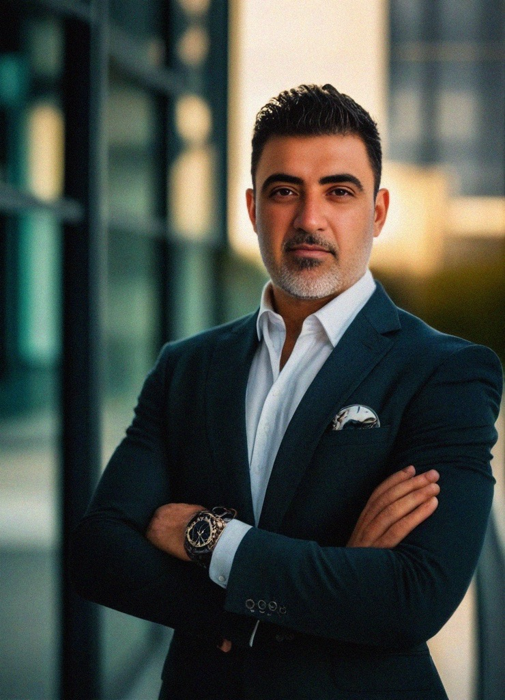

Electronic Press Kit
Cinematic compositions shaped by emotion, memory and storytelling — built for listeners, visual worlds and moments that resist language.
Artist Bio
Sharbel Wahbee is an independent cinematic artist and composer based in Dubai, creating emotional sound worlds across cinematic rock, alternative rock, cinematic pop and epic atmospheric music.
His work is built around conceptual storytelling: every release is treated as a chapter, not a random single. The music moves between intimate vulnerability, cinematic scale and rock-driven emotional impact.

Positioning
Music shaped around emotional storytelling rather than genre formulas.
Cinematic rock, alternative rock, pop-rock, emotional pop and epic atmospheric textures.
Listeners connecting through emotional intensity, conceptual worlds and long-form artistic arcs.
Featured Releases
Pop-rock emotional anchor and audience-attachment track.
Rock bridge into the Comet era.
The upcoming rock album era built around impact, survival and aftermath.